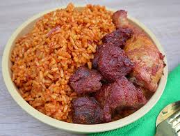

Attention! Attention!! Attention!!!
I added index.html so that I can be able to deploy it on netlify. Using recipie.html alone was not working. Thank you!
Recipe Information
Preparation Time: 15 minutes
Cooking Time: 45 minutes
Total Time: 1 hour
Servings: 4-6
Difficulty Level: Medium
Ingredients
- 2 cups long-grain parboiled rice
- 1/4 cup vegetable oil
- 1 large onion, chopped
- 2 cloves garlic, minced
- 1 bell pepper, chopped
- 2 cups tomato sauce or blended tomatoes
- 1 teaspoon thyme
- 1 teaspoon curry powder
- 1 bay leaf
- 2 cups chicken broth or water
- Salt and pepper to taste
- Optional: cooked vegetables or protein (chicken, shrimp, etc.)
Instructions
- Rinse the rice under cold water until the water runs clear. Set aside.
- Heat the vegetable oil in a large pot over medium heat. Add the chopped onions and sauté until translucent.
- Add the minced garlic and chopped bell pepper, cooking for another 2-3 minutes.
- Stir in the tomato sauce or blended tomatoes, thyme, curry powder, and bay leaf. Cook for about 10 minutes, allowing the sauce to thicken.
- Add the rinsed rice to the pot, stirring to coat the rice with the tomato mixture.
- Pour in the chicken broth or water, and season with salt and pepper. Bring to a boil.
- Once boiling, reduce the heat to low, cover the pot, and let it simmer for about 20-25 minutes, or until the rice is cooked and has absorbed all the liquid.
- If using, stir in cooked vegetables or protein during the last 5 minutes of cooking.
- Remove from heat and let it sit covered for an additional 5 minutes before fluffing with a fork.
- Serve hot and enjoy your homemade Jollof rice!
Notes
You can customize this recipe by adding your favorite vegetables or proteins. Adjust the spice levels to suit your taste. Jollof rice is often served with fried plantains, salad, or grilled meats.

Delicious Jollof Rice